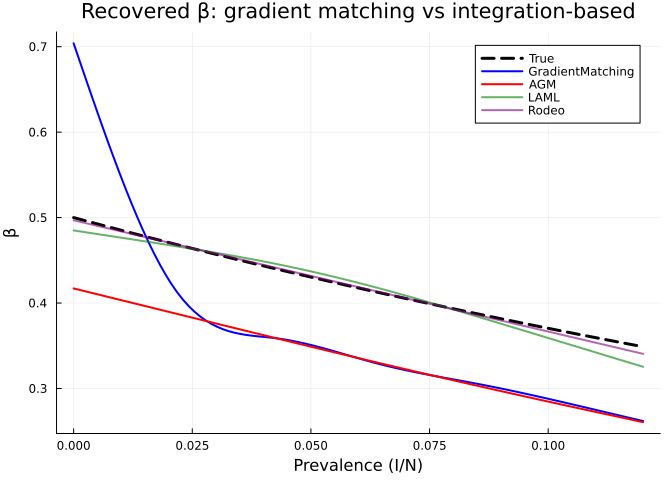
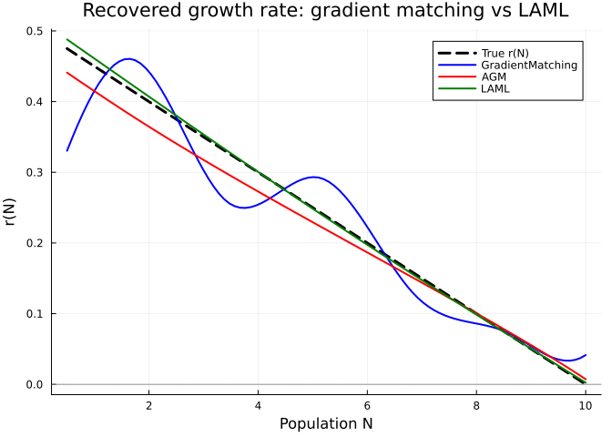
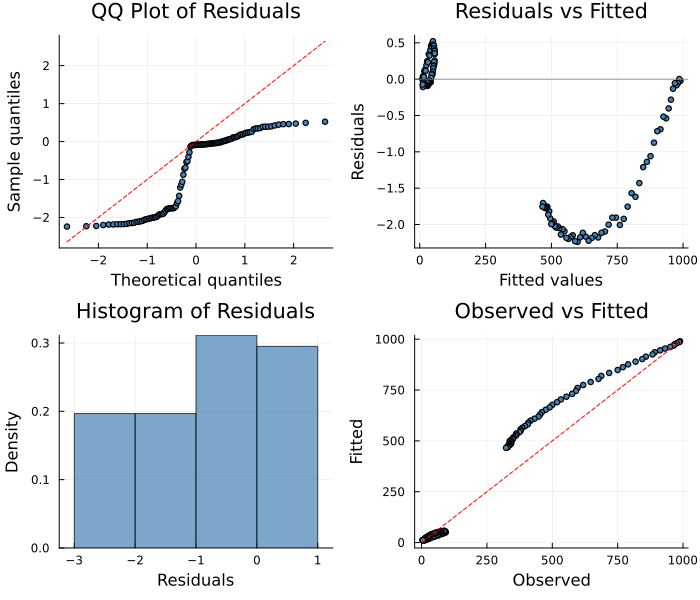
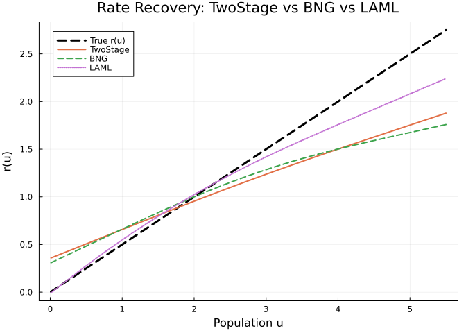

Integration-Free Inference with Gradient Matching
Overview
Fitting ODE models typically requires solving the ODE at each iteration of the optimiser — which can be slow, numerically unstable, or fail entirely for stiff systems. Gradient matching methods bypass ODE integration entirely by:
- Fitting a smooth curve to the data
- Computing derivatives of that curve
- Matching those derivatives to the ODE right-hand side
PartiallySpecifiedModels.jl provides several integration-free solvers:
GradientMatching— basic smoothing spline approach with derivative matchingAdaptiveGradientMatching(AGM) — Gaussian process-based with adaptive mismatch parameters and smoothing penaltiesTwoStageSolver— smooth-then-differentiate baseline (penalized least squares)BNGSolver— Bayesian neural gradient matching (Bayesian interpretation of the two-stage idea)
This vignette compares these integration-free methods against standard integration-based solvers, highlighting the speed advantage and scenarios where gradient matching excels.
Setup
using PartiallySpecifiedModels
using PartiallySpecifiedModels: solve
using OrdinaryDiffEq
using Plots
using Random
Random.seed!(42)TaskLocalRNG()Example 1: SIR Model — Speed Comparison
Generate data
function sir_true!(du, u, p, t)
S, I, R = u; N = S + I + R; prev = I / N
β = 0.5 * exp(-3.0 * prev)
du[1] = -β * S * I / N
du[2] = β * S * I / N - 0.25 * I
du[3] = 0.25 * I
end
u0 = [990.0, 10.0, 0.0]; tspan = (0.0, 60.0)
sol_ode = OrdinaryDiffEq.solve(ODEProblem(sir_true!, u0, tspan), Tsit5(), saveat=1.0)
data_t = sol_ode.t
data_SI = max.(hcat(sol_ode[1,:], sol_ode[2,:]) .+
hcat(5.0 .* randn(length(data_t)), 2.0 .* randn(length(data_t))), 0.01)
function sir!(du, u, p, t)
S, I, R = u; N = S + I + R
β_val = p.β(I / N)
foi = max(β_val, 0.001) * S * I / N
du[1] = -foi; du[2] = foi - 0.25 * I; du[3] = 0.25 * I
end
approx_β = BSplineApproximator(:β, (0.0, 0.15), 8; initial=0.4)
prob = PSMProblem(sir!, u0, tspan, [approx_β];
data_times=data_t, data_values=data_SI,
obs_to_state=[1, 2], known_params=(γ=0.25,), solver=Tsit5())PSMProblem{typeof(sir!), Vector{Float64}, Gaussian, Tsit5{typeof(OrdinaryDiffEqCore.trivial_limiter!), typeof(OrdinaryDiffEqCore.trivial_limiter!), Static.False}}(sir!, [990.0, 10.0, 0.0], (0.0, 60.0), BSplineApproximator[BSplineApproximator(:β, (0.0, 0.15), 8, PartiallySpecifiedModels.var"#6#7"{Float64}(0.4))], [0.0, 1.0, 2.0, 3.0, 4.0, 5.0, 6.0, 7.0, 8.0, 9.0 … 51.0, 52.0, 53.0, 54.0, 55.0, 56.0, 57.0, 58.0, 59.0, 60.0], [988.1832125927411 9.896037666331825; 985.8975437423887 13.461390776142522; … ; 329.35354655287034 3.2084058156376694; 323.05533131939933 5.286766967095861], [1.0 1.0; 1.0 1.0; … ; 1.0 1.0; 1.0 1.0], [1, 2], (γ = 0.25,), Gaussian(), Tsit5{typeof(OrdinaryDiffEqCore.trivial_limiter!), typeof(OrdinaryDiffEqCore.trivial_limiter!), Static.False}(OrdinaryDiffEqCore.trivial_limiter!, OrdinaryDiffEqCore.trivial_limiter!, static(false)), Dict{Symbol, Any}(), false, Float64[], nothing)Fit with all approaches
┌ Warning: CollocationLAML: simulating the fitted dynamics gives a data loss 8468.0× the reported `data_loss`. `fitted_values` are the estimated STATE, which need not lie near any trajectory the dynamics admit, so the reported loss understates the model's error by that factor. See `convergence.simulated_data_loss`.
└ @ PartiallySpecifiedModels ~/Projects/psm/PartiallySpecifiedModels.jl/src/collocation_solver.jl:1267
Method | Time (s) | Data Loss
-------------------------------------------------------
GradientMatching | 6.03 | 953677.0
AGM | 9.66 | 1.2349747e6
LAML | 6.14 | 1346.7
CollocationLAML | 3.38 | 771.1
AdamSolver | 4.7 | 1365.0
RodeoSolver | 14.62 | 1505.9[!NOTE]
The
Data Losscolumn is a like-for-like comparison: every solver in this table reports the weighted residual sum of squares of its fitted model, evaluated at the fitted parameters.GradientMatching,AGM,LAML,AdamSolverandRodeoSolverobtain that trajectory by integrating the dynamics fromu0.CollocationLAMLdoes not: it estimates the state trajectory jointly with the coefficients and reports that estimate, which is coupled to the fitted parameters but does not start exactly atu0. See thefitted_valuesdocstring for the two conventions.
GradientMatchingandAGMpreviously reported the stage-1 data smoother instead, so their entries measured the smoother’s fit to the data rather than the model’s, and were not comparable with the integration-based rows beside them. Thedata_lossfigures printed here are from a render that predates that fix.
Compare recovered β(prevalence)
prev_grid = range(0.0, 0.12, length=100)
β_true = [0.5 * exp(-3.0 * p) for p in prev_grid]
p_β = plot(prev_grid, β_true, label="True", lw=3, color=:black, ls=:dash,
xlabel="Prevalence (I/N)", ylabel="β",
title="Recovered β: gradient matching vs integration-based")
# Gradient matching methods
plot!(p_β, prev_grid, [sol_gm.unknown_functions[:β](p) for p in prev_grid],
label="GradientMatching", lw=2, color=:blue)
plot!(p_β, prev_grid, [sol_agm.unknown_functions[:β](p) for p in prev_grid],
label="AGM", lw=2, color=:red)
# Integration-based
plot!(p_β, prev_grid, [sol_laml.unknown_functions[:β](p) for p in prev_grid],
label="LAML", lw=2, color=:green, alpha=0.6)
plot!(p_β, prev_grid, [sol_rodeo.unknown_functions[:β](p) for p in prev_grid],
label="Rodeo", lw=2, color=:purple, alpha=0.6)
p_β
How Adaptive Gradient Matching Works
The AGM solver works in three stages:
Stage 1: Smooth the data with a Gaussian process
A GP with an RBF kernel is fitted to each observed state variable, yielding a smooth interpolant and its derivatives:
\[x_k(t) \sim \mathcal{GP}(0, \kappa(t, t')), \quad \text{where } \kappa(t,t') = \sigma_f^2 \exp\left(-\frac{(t-t')^2}{2\ell^2}\right)\]
The GP hyperparameters ($\sigma_f^2, \ell, \sigma_n^2$) are estimated by maximising the marginal likelihood.
Stage 2: Match derivatives to ODE
Given the GP-smoothed states $\hat{x}_k(t)$ and their derivatives $\hat{x}'_k(t)$, we minimise:
\[\sum_k \left(\hat{x}'_k - f_k(\hat{x}, \theta)\right)^T (A_k + \gamma_k I)^{-1} \left(\hat{x}'_k - f_k(\hat{x}, \theta)\right) + \lambda \sum_j \beta_j^T S_j \beta_j\]
where:
\[A_k\]
is the GP covariance of the derivatives\[\gamma_k\]
is an adaptive mismatch parameter (estimated)\[\lambda\]
is a smoothing penalty weight\[S_j\]
is the B-spline penalty matrix
Stage 3: Simulate with fitted parameters
The optimised B-spline coefficients are used to solve the ODE forward for fitted trajectories.
Inspecting AGM diagnostics
AGM convergence info:
GP hyperparams: [(52268.25281995996, 18.0, 52.26825281995996), (864.7704326939466, 12.0, 8.647704326939467), (0.0, 0.0, 0.0)]
Gamma (mismatch): [3.8343, 2.9001, 32757.2236]
Derivative loss: 11405.326Example 2: Logistic Growth — A Clean Demonstration
For a simpler illustration of how gradient matching works:
function growth_true!(du, u, p, t)
du[1] = 0.5 * (1.0 - u[1] / 10.0) * u[1]
end
u0_g = [0.5]; tspan_g = (0.0, 15.0)
sol_g = OrdinaryDiffEq.solve(ODEProblem(growth_true!, u0_g, tspan_g), Tsit5(), saveat=0.5)
data_g = reshape(max.(sol_g[1,:] .+ 0.3 .* randn(length(sol_g.t)), 0.01), :, 1)
function growth!(du, u, p, t)
du[1] = p.r(u[1]) * u[1]
end
approx_r = BSplineApproximator(:r, (0.0, 12.0), 8; initial=0.3)
prob_g = PSMProblem(growth!, u0_g, tspan_g, [approx_r];
data_times=sol_g.t, data_values=data_g, obs_to_state=[1], solver=Tsit5())PSMProblem{typeof(growth!), Vector{Float64}, Gaussian, Tsit5{typeof(OrdinaryDiffEqCore.trivial_limiter!), typeof(OrdinaryDiffEqCore.trivial_limiter!), Static.False}}(growth!, [0.5], (0.0, 15.0), BSplineApproximator[BSplineApproximator(:r, (0.0, 12.0), 8, PartiallySpecifiedModels.var"#6#7"{Float64}(0.3))], [0.0, 0.5, 1.0, 1.5, 2.0, 2.5, 3.0, 3.5, 4.0, 4.5 … 10.5, 11.0, 11.5, 12.0, 12.5, 13.0, 13.5, 14.0, 14.5, 15.0], [0.01; 1.1164659276520987; … ; 9.561007913522136; 10.063834705188276;;], [1.0; 1.0; … ; 1.0; 1.0;;], [1], NamedTuple(), Gaussian(), Tsit5{typeof(OrdinaryDiffEqCore.trivial_limiter!), typeof(OrdinaryDiffEqCore.trivial_limiter!), Static.False}(OrdinaryDiffEqCore.trivial_limiter!, OrdinaryDiffEqCore.trivial_limiter!, static(false)), Dict{Symbol, Any}(), false, Float64[], nothing)# Compare methods
sol_gm_g = solve(prob_g, GradientMatching(maxiters=200, verbose=false))
sol_agm_g = solve(prob_g, AdaptiveGradientMatching(maxiters=200, verbose=false))
sol_laml_g = solve(prob_g, LAML(maxiters=80, verbose=false))
N_grid = range(0.5, 10.0, length=100)
r_true = [0.5 * (1.0 - N / 10.0) for N in N_grid]
plot(N_grid, r_true, label="True r(N)", lw=3, color=:black, ls=:dash,
xlabel="Population N", ylabel="r(N)",
title="Recovered growth rate: gradient matching vs LAML")
plot!(N_grid, [sol_gm_g.unknown_functions[:r](N) for N in N_grid],
label="GradientMatching", lw=2, color=:blue)
plot!(N_grid, [sol_agm_g.unknown_functions[:r](N) for N in N_grid],
label="AGM", lw=2, color=:red)
plot!(N_grid, [sol_laml_g.unknown_functions[:r](N) for N in N_grid],
label="LAML", lw=2, color=:green)
hline!([0.0], color=:gray, ls=:dot, label=nothing)
Diagnostic Plots
A standard 4-panel diagnostic display assesses residual behaviour for the Adaptive Gradient Matching fit.
using PartiallySpecifiedModels: appraise
diag = appraise(sol_agm)
p_qq = scatter(diag.qq_theoretical, diag.qq_sample,
xlabel="Theoretical quantiles", ylabel="Sample quantiles",
title="QQ Plot of Residuals", ms=3, legend=false, color=:steelblue)
mn, mx = extrema(vcat(diag.qq_theoretical, diag.qq_sample))
plot!(p_qq, [mn, mx], [mn, mx], color=:red, ls=:dash, label="")
p_rf = scatter(diag.fitted, diag.residuals,
xlabel="Fitted values", ylabel="Residuals",
title="Residuals vs Fitted", ms=3, legend=false, color=:steelblue)
hline!(p_rf, [0], color=:gray, ls=:dot)
p_hist = histogram(diag.residuals, normalize=:pdf,
xlabel="Residuals", ylabel="Density",
title="Histogram of Residuals", legend=false, color=:steelblue, alpha=0.7)
p_of = scatter(diag.observed, diag.fitted,
xlabel="Observed", ylabel="Fitted",
title="Observed vs Fitted", ms=3, legend=false, color=:steelblue)
mn2, mx2 = extrema(vcat(diag.observed, diag.fitted))
plot!(p_of, [mn2, mx2], [mn2, mx2], color=:red, ls=:dash, label="")
plot(p_qq, p_rf, p_hist, p_of, layout=(2, 2), size=(700, 600))
Durbin-Watson: 0.002, 0.029Two-Stage Smooth-Then-Differentiate
The TwoStageSolver provides the simplest integration-free baseline: it first smooths the observed data with a spline, then numerically differentiates the smooth to estimate derivatives, and finally fits the unknown function to match those derivatives. This is fast but less accurate than the adaptive gradient matching approach above.
Exponential decay comparison
Using a density-dependent decay model $du/dt = -r(u) \cdot u$ with true rate $r(u) = 0.5u$, we compare the three derivative-matching solvers against the integration-based LAML baseline.
r_true_decay(u) = 0.5 * u
function decay!(du, u, p, t)
du[1] = -p.r(u[1]) * u[1]
end
u0_d = [5.0]; tspan_d = (0.0, 10.0)
sol_d = OrdinaryDiffEq.solve(ODEProblem(decay!, u0_d, tspan_d, (; r=r_true_decay)), Tsit5(); saveat=0.25)
data_d = reshape(max.(sol_d[1,:] .+ 0.1 .* randn(length(sol_d.t)), 0.01), :, 1)
uf_d = BSplineApproximator(:r, (0.01, 5.5), 10)
prob_d = PSMProblem(decay!, u0_d, tspan_d, [uf_d];
data_times=collect(sol_d.t), data_values=Float64.(data_d),
obs_to_state=[1], known_params=NamedTuple())PSMProblem{typeof(decay!), Vector{Float64}, Gaussian, Tsit5{typeof(OrdinaryDiffEqCore.trivial_limiter!), typeof(OrdinaryDiffEqCore.trivial_limiter!), Static.False}}(decay!, [5.0], (0.0, 10.0), BSplineApproximator[BSplineApproximator(:r, (0.01, 5.5), 10, PartiallySpecifiedModels.var"#4#5"())], [0.0, 0.25, 0.5, 0.75, 1.0, 1.25, 1.5, 1.75, 2.0, 2.25 … 7.75, 8.0, 8.25, 8.5, 8.75, 9.0, 9.25, 9.5, 9.75, 10.0], [4.999369988114051; 3.2974435780566793; … ; 0.18161410174188075; 0.2814068342217305;;], [1.0; 1.0; … ; 1.0; 1.0;;], [1], NamedTuple(), Gaussian(), Tsit5{typeof(OrdinaryDiffEqCore.trivial_limiter!), typeof(OrdinaryDiffEqCore.trivial_limiter!), Static.False}(OrdinaryDiffEqCore.trivial_limiter!, OrdinaryDiffEqCore.trivial_limiter!, static(false)), Dict{Symbol, Any}(), false, Float64[], nothing)sol_ts = solve(prob_d, TwoStageSolver(maxiters=2000, lr=0.01, verbose=false))
sol_bng = solve(prob_d, BNGSolver(maxiters=2000, lr=0.01, verbose=false))
sol_laml_d = solve(prob_d, LAML(maxiters=100, verbose=false))
u_grid_d = range(0.01, 5.5, length=100)
plot(u_grid_d, r_true_decay.(u_grid_d), label="True r(u)", lw=3, color=:black, ls=:dash,
xlabel="Population u", ylabel="r(u)", title="Rate Recovery: TwoStage vs BNG vs LAML")
plot!(u_grid_d, [sol_ts.unknown_functions[:r](x) for x in u_grid_d], label="TwoStage", lw=2)
plot!(u_grid_d, [sol_bng.unknown_functions[:r](x) for x in u_grid_d], label="BNG", lw=2, ls=:dash)
plot!(u_grid_d, [sol_laml_d.unknown_functions[:r](x) for x in u_grid_d], label="LAML", lw=2, ls=:dot)
TwoStage loss=1.1447 r(2)=0.9541
BNG loss=0.7976 r(2)=0.9998
LAML loss=0.3444 r(2)=1.0232
True r(2)=1.0TwoStage and BNG match similar derivative targets, so their point estimates are typically close; BNG marginalizes the observation and prior variances and fits a bootstrap × restart ensemble, adding uncertainty quantification. LAML integrates the ODE and selects smoothing via marginal likelihood, generally recovering the functional response more accurately when data are sparse or noisy.
When to Use Gradient Matching
Advantages
- No ODE integration — avoids numerical instability, stiffness issues, and solver failures
- Fast optimization loop — no ODE solves during fitting, though as the timing table above shows, total runtime is not always lower than the fastest integration-based solvers
- No sensitivity equations — simpler computational graph
Limitations
- Relies on good derivative estimates from the data — needs sufficient, well-spaced observations
- Indirect data fit — the optimization matches derivatives of the smoothed data rather than the data themselves; the reported
data_lossis computed afterwards by integrating the ODE at the fitted parameters and comparing to the observations - May not generalise for prediction — the fitted parameters work for the observed time window but extrapolation may be poor
Recommendations
| Scenario | Recommended method |
|---|---|
| Fastest possible baseline | TwoStageSolver or BNGSolver |
| Fast exploratory fit | GradientMatching |
| Stiff/unstable ODE | AdaptiveGradientMatching |
| Well-behaved system, best accuracy | LAML or CollocationLAML |
| Need uncertainty quantification | RodeoSolver |
| Neural network approximators | AdamSolver |